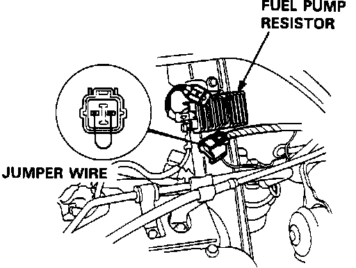

Fuel Pump Ballast Resistor: Description and Operation
Fuel Pump Resistor:

The fuel pump resistor reduces current to the fuel pump. It is located in the engine compartment on the right side of the fuel pump. During normal engine operation, current flows through the fuel pump resistor to reduce pump output. Under certain engine demands, the resistor is bypassed by the fuel pump relay which is ECU controlled.